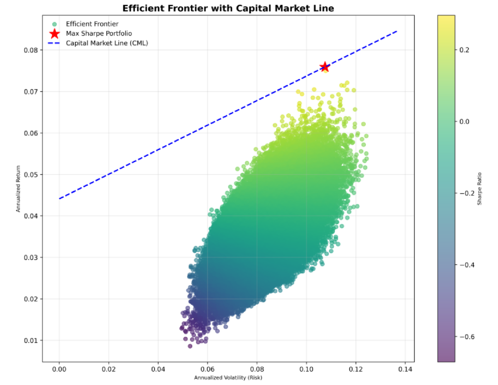
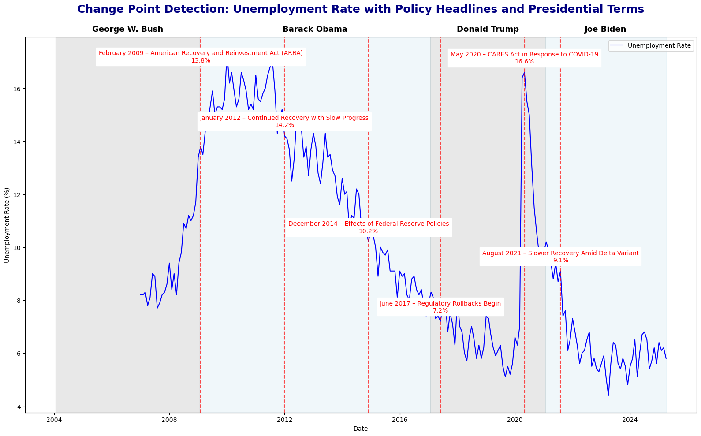
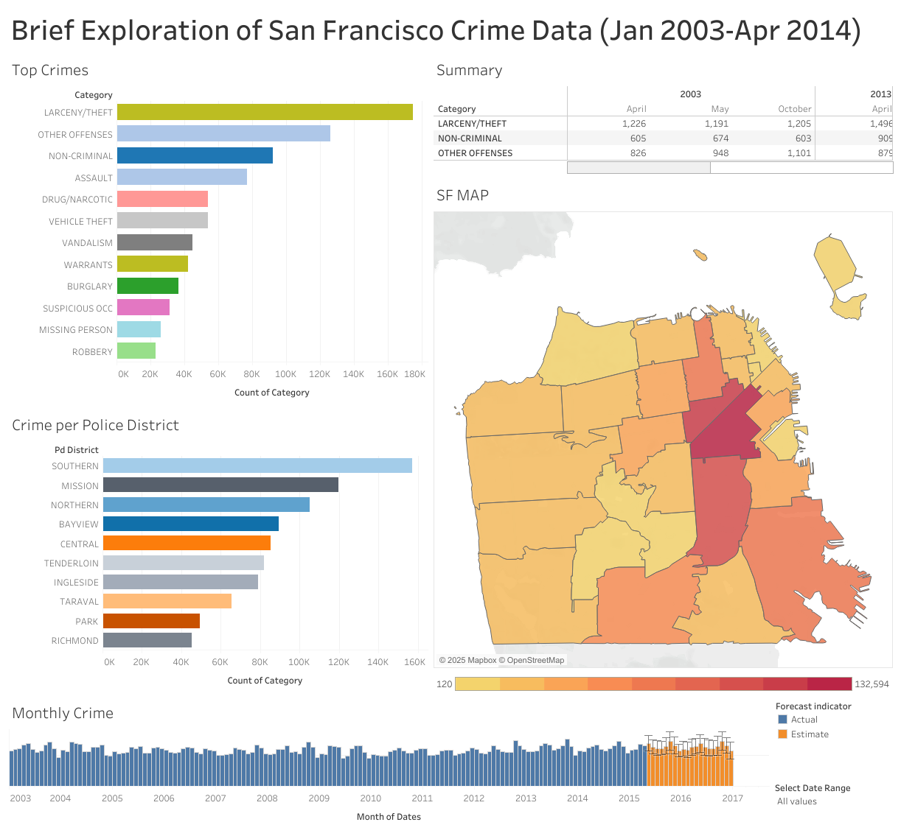
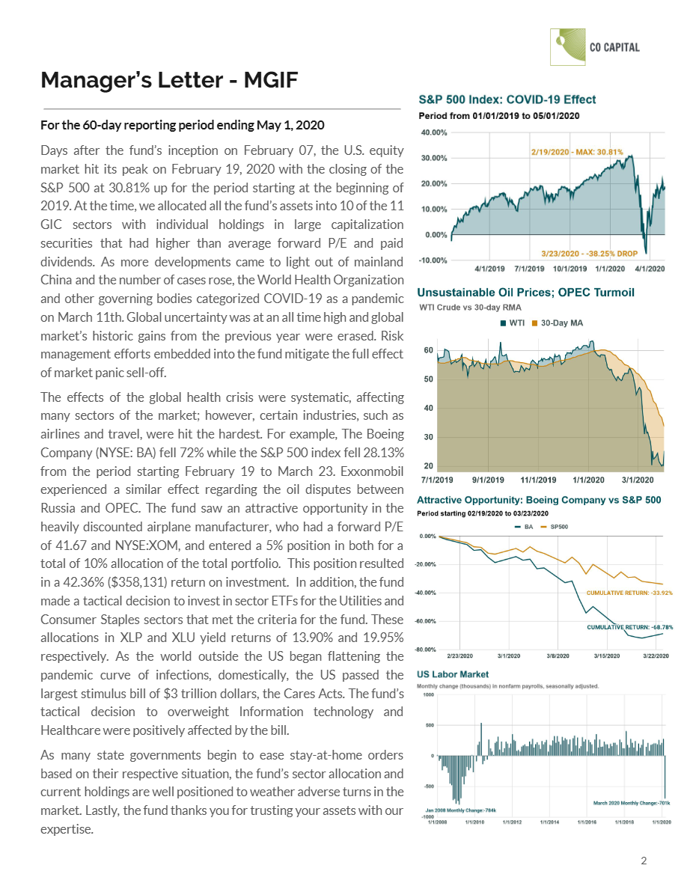

About
I'm Omar Pelcastre Cabrera, an aspiring finance and business intelligence professional with a B.S. in Business Administration from Cal Poly Pomona, concentrating in Finance and Computer Information Systems. During my time at the university, I served as president of the student-managed investment fund, where I was part of the team led a group of talented individuals to a first-place finish in a CFAOC-sponsored portfolio competition. These experiences gave me hands-on exposure to equity research, financial strategy, and data analytics&mdash foundations I continue to build on today.
Before I was authorized to work legally in the U.S., I spent nearly a decade adapting to the constraints of undocumented status. I pursued photography out of both necessity and creativity—eventually running my own business and contracting with studios to support myself and my family. During the pandemic, I transitioned to gig work (Uber and DoorDash)gig work (Uber and Postmates), where I developed custom tools to track and forecast my income. These moments shaped my mindset: resourceful, flexible, and grounded in real-world problem-solving. I later joined Sunset School Portraits, a role that allowed me to work and continue developing my skills while caring for my son.
My technical strengths are reinforced by my business acumen that lie in financial research, equity analysis, and data-driven modeling. Some of the tools I use include Python, R, and Excel. No-code tools also play a role in my toolkit (Tableau, PowerBI & Airtable). I continue to sharpen these skills through personal projects and ongoing education. My goal is to apply this technical foundation—and the resilience of my journey—to a team that values strategic thinking, adaptability, and meaningful impact. What drives me most is the ability to keep learning while supporting my family. I'm most fulfilled when we're together outdoors, discovering something new. I strive to be a great example for my son and a loving husband to my wife, and I define success as doing meaningful work with purpose while providing for those I love.
Feel free to connect with me on LinkedIn or checkout my GitHub for more projects.
Current Projects
-

Portfolio Optimization ↗
Python-based mean-variance optimizer that pulls historical price data, computes efficient frontiers, and outputs interactive charts in Jupyter Notebook. Optimization methods include Markowitz and Minimum Variance.
-

Unemployment Demographic Analysis ↗
Jupyter notebook exploring unemployment trends by age, race, and gender using Census and BLS data. Performs data cleaning, visualization, and statistical analysis to uncover insights. Methods for analysis include time-series analysis, change-point detection, and demographic segmentation.
-

SF Crime Data Dashboard ↗
Interactive Tableau viz showing crime patterns in San Francisco—filter by category, time, and neighborhood. Analyzes trends, hotspots, and seasonal variations using historical data from 2003-2015. Geographic analysis includes heatmaps and clustering to identify crime hotspots.
-

Seminar in Portfolio Management Report (PDF) ↗
12-page report detailing annual performance, variance analysis, and forward guidance of a simulated portfolio. Utilizes advanced spreadsheet functions and data visualization techniques to present findings. Methods for analysis include scenario analysis, stress testing, and performance attribution. Data is sourced from Refinitiv Eikon and Google Sheets.
-
CFAOC Portfolio Competition Presentation (PDF) ↗
15-page presentation summarizing our winning portfolio strategy, analysis, and performance metrics. Slide design and data visualizations were formatted using Google Sheets and Tableau. Data was compiled from various sources, including Bloomberg, FRED, and company filings. The presentation includes detailed analysis of sector allocations, risk metrics, and performance attribution. Methods for analysis include portfolio optimization, risk-adjusted returns, and scenario analysis. My contributions included data analysis, portfolio optimization for asset allocation, slide design, and presentation delivery.
Skills
Experience
-
Jun 2019 – Jan 2021
Equity & Fixed Income Analyst
Cal Poly Pomona Student-Managed Investment Fund
- Led sector analysis for Financials, Real Estate & Utilities within a $200K fund.
- Built a Markowitz mean-variance optimizer to tailor asset allocations for the CFA OC RFP.
- Performed ongoing performance monitoring, rebalancing & fixed-income risk analysis.
-
Apr 2021 – Present
Independent Contractor – School Photographer
Sunset School Portraits
- Manage 200+ student sessions per day under tight timelines, maintaining 100% delivery accuracy.
- Built a custom tracking tool (Python/Excel) to forecast daily bookings and streamline workflows.
- Coordinated with administrators & educators to ensure smooth, on-time events.
-
Mar 2020 – Apr 2021
Driver
Uber & Postmates
- Provided reliable transportation services for parcels and food delivery.
- Maintained a 5.0-star rating on Uber for exceptional service.
- Utilized efficient route planning to optimize delivery times.
-
2013 – Present
Owner & Lead Photographer
Omar Pelcastre Photography
- Founded and grew an event photography business serving weddings, quinceañeras and community events.
- Coordinated 12+ hour shoots with bridal shops, event planners and assistants to capture every moment.
- Built and maintained custom online galleries for hundreds of clients to view, share, and download proofs.
- Managed all client communications, contracts, billing and post-production delivery.